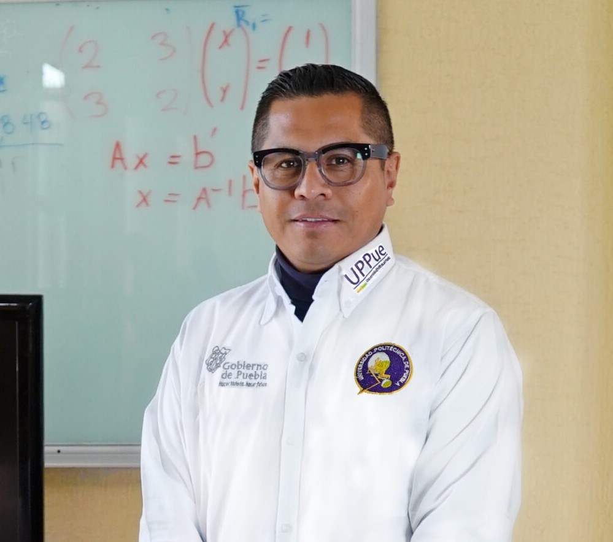
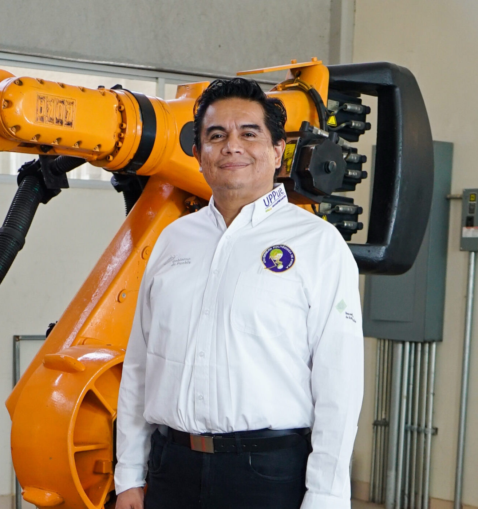

RegeneraMyPE
Gestión de la Cadena de Valor Empresarial en la MyPE
Universidad Politécnica de Puebla

Especialista en MyPE's y mercadotecnia de servicios.

Experto en gestión financiera y cumplimiento fiscal.
Especialista en análisis de datos e innovación.

Experto en transformación digital organizacional.
Este equipo académico trabaja en el fortalecimiento del tejido empresarial regional mediante la vinculación efectiva entre la academia y las micro y pequeñas empresas.